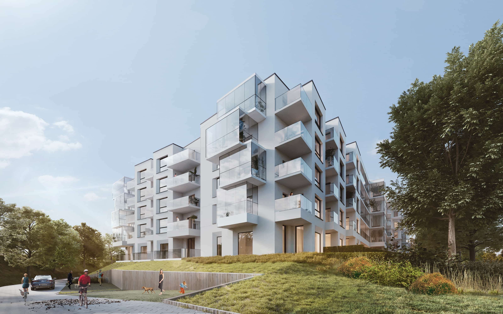
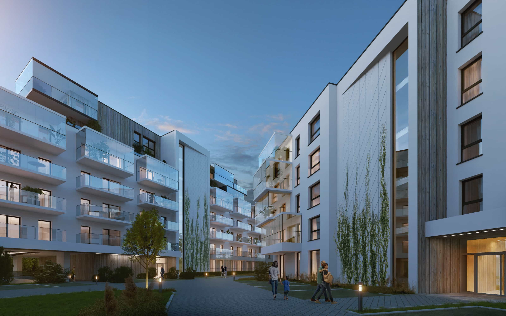
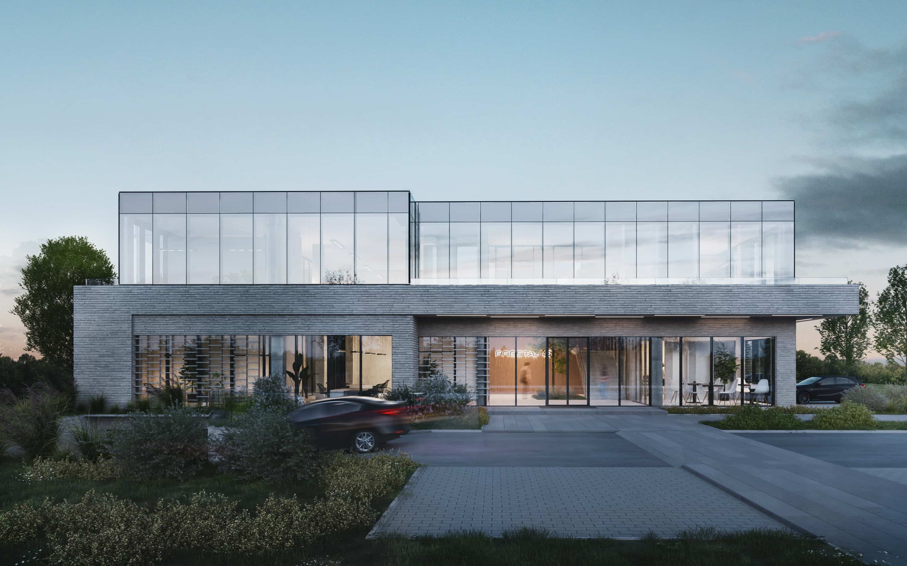

Nasza pracownia zapewnia całkowitą obsługę projektową jako projektant generalny w zakresie planowania urbanistycznego, architektonicznego, projektowania wnętrz oraz project–management’ u. Z naszej strony gwarantujemy wysoki standard wykonywanych usług opierając na technologi BIM wszystkie nasze projekty.
Our studio provides complete design services as a general designer in the field of urban planning, architectural, interior design and project-management. For our part, we guarantee a high standard of services, basing all our projects on the BIM technology.
Jakub Pawlak
Prezes Zarządu / President of the Board
W naszym biurze wykonaliśmy / In our office, we have performed
90
analiz chłonności / absorbency analyzes
25
projektów koncepcyjnych / conceptual designs
10
projektów budowlanych / permit projects
8
projektów wykonawczych / executive designs
Pracownicy / Employees
4
architektów prowadzących / leading architects
14
architektów / architects
4
pracowników administracyjnych / administrative employees
Wybrane prace wykonane w latach 2009-2022
Selected works performed in the years 2009-2022
galeria projektów
Retail Park | Poznań
Projekt koncepcyjny zespołu budynków dwukondygnacyjnych Retail Park o powierzchni użytkowej 21 296 m2 przy ul. Hetmańskiej w Poznaniu Conceptual design of a complex of two-story Retail Park buildings with a usable area of 21 296 m2 at Hetmańska Street in Poznań
Założenie miało również na celu stworzenie przestrzeni zielonych przeznaczonych do relaksu i integracji sąsiedzkich The assumption was also aimed at creating green spaces intended for relaxation and neighborhood integration
Zielony ciąg pieszy miał za zadanie zachęcić i wprowadzić kupujących w założenie Retail Park The purpose of the green pedestrian route was to encourage and introduce buyers to the Retail Park
Projekt Zintegrowanego Centrum Komunikacyjnego wraz z budynkiem handlowo-usługowym | Konin Design of an Integrated Communication Center with a commercial and service building | Konin
Projekt Zintegrowanego Centrum Komunikacyjnego wraz z budynkiem handlowo-usługowym o powierzchni użytkowej 9 267,3 m2 w Koninie Design of an Integrated Communication Center with a commercial and service building with a usable area of 9 267,3 m2 in Konin
Widok z peronu na projektowany budynek View from the platform on the designed building

Zespół zabudowy mieszkaniowej | Olsztyn Residential building complex | Olsztyn

Projekt zespołu budynków mieszkalnych z funkcją usługową w parterze o łącznej powierzchni użytkowej 13 650 m2 przy ul. Jagiellończyka w Olsztynie Project of a complex of residential buildings with a service function on the ground floor, total usable area 13 650 m2 , Jagiellończyka Street in Olsztyn

Budynek biurowo-magazynowy | Suchy las Office and warehouse building | Suchy las
Projekt koncepcyjny budynku biurowo-magazynowego o powierzchni użytkowej 3 120,4 m2 w Suchym Lesie Conceptual design of office and warehouse building with a usable area of 3 120,4 m2 in Suchy Las